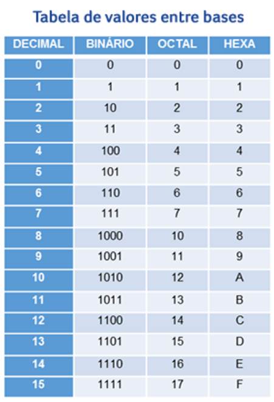

Sistemas Numéricos
Para a compreenção deste resumo, precisamos entender que:
Toda representação de um sistema numérico é formada pelo número correspondente e sua base. A base deve ser sempre representada de forma subscrita, representando o valor da base em questão.
O sistema binário é representado por 0 e 1. Por exemplo:
1001012
Segue abaixo algumas informações importantes:
-
 O sistema decimal é representado pela base 10 e possui dígitos de 0 a 9.
O sistema decimal é representado pela base 10 e possui dígitos de 0 a 9.
-
Já o sistema octal possui a base 8 e é representado por dígitos de 0 a 7, ficando assim: 5428.
-
Por último, o sistema hexadecimal é representado pela base 16. Seus dígitos são representados de 0 a 9, acrescidos de A, B, C, D, E e F. Sua notação é FA4116.
Quando trabalhamos com bases numéricas, temos de considerar que esses números podem ser convertidos entre as bases. Por exemplo, podemos receber um número decimal, como uma temperatura. Esse número pode ser convertido para outras bases, como a binária ou hexadecimal.
BIT e Sistemas Numéricos
Vamos relembrar alguns conceitos básicos sobre BIT:
-
 BIT vem em do termo Binary Digit ou digito binário. Dígito binário é o menor elemento de informação que temos, representado sempre por 0 e 1.
BIT vem em do termo Binary Digit ou digito binário. Dígito binário é o menor elemento de informação que temos, representado sempre por 0 e 1.
-
Quando usamos 4 bits, chamamos de nibble.
-
Quando usamos um conjunto de 8 bits, chamamos de byte; logo, chamamos 16 bits de 2 bytes.
Vamos relembrar alguns conceitos básicos sobre Sistemas numéricos:
-
São utilizados para representar números.
-
Todos os sistemas numéricos são representados por sua determinada base.
-
A base utilizada tem de ser um conjunto de símbolos diferentes entre si.
- A base desse sistema é 10
- Símbolos: 0, 1, 2, 3, 4, 5, 6, 7, 8 e 9
- Notação: 195 (195 na base 10)
- Representação matemática para chegar a um número decimal:
(4 x 10) + (9 x 10) + (3 x 10) = 400 + 90 + 3 = 493 (493 na base 10).
- A base desse sistema é 2
- Símbolos: 0 e 1
- Notação: 110101102 (11010110 na base 2)
- Usado em circuitos eletrônicos
- A base desse sistema é 8
- Símbolos: 0, 1, 2, 3, 4, 5, 6 e 7
- Notação: 15748 (1574 na base 8)
- Utilizado na programação de microprocessadores
- A base desse sistema é 16
- Símbolos: 0, 1, 2, 3, 4, 5, 6, 7, 8, 9, A, B, C, D, E e F
- As letras possuem valores decimais: A – 10 B – 11 C – 12 D – 13 E – 14 F – 15
- Notação: C3B216 (C3B2 na base 16)
Conversão entre bases numéricas
Agora vamos para as conversões. Clique nos itens abaixo e veja suas respectivas explicações:
Quando o quociente chegar a 0, pega-se os restos de baixo para cima, da direita para esquerda.
Veja mais alguns tipos de conversões:
-
Decimal para octal: nesta conversão basta fazer a divisão sucessiva por 8, tendo os restos como resultado.
-
Octal para decimal: para converter de octal para decimal, deve-se numerar as potências e fazer a soma da multiplicação do dígito octal pela base octal elevada a potência correpondente a posição.
-
Binário para hexadecimal: pode-se utilizar o método de conversão entre bases, convertendo do binário para decimal e depois para hexadecimal. Outra forma de fazer é convertendo direto, separando os bits em grupos de 4, da direita para a esquerda. Se o último grupo da esquerda não possuir 4 dígitos, se completa com zeros a esquerda de forma a ficar o grupo de 4 bits.
-
Hexadecimal para binários: também possui dois métodos para este tipo de conversão, sendo o primeiro deles a conversão entre bases onde, converte-se de hexadecimal para decimal e depois em binário. A segunda forma de realizar a conversão é convertendo direto, neste caso converte-se utilizando a tabela de valores de bases.
Conheça a tabela de valores entre as bases:

Agora vamos verificar como realizar conversões para Octal:
-
Na conversão de Binário para Octal seguimos os seguintes passos:
-
Para converter de Octal para Binário faremos da seguinte forma:
-
Converter de Octal para Hexadecimal, deve-se seguir os seguintes passos:
-
Para a conversão de Hexadecimal para Octal, faremos da seguinte forma: